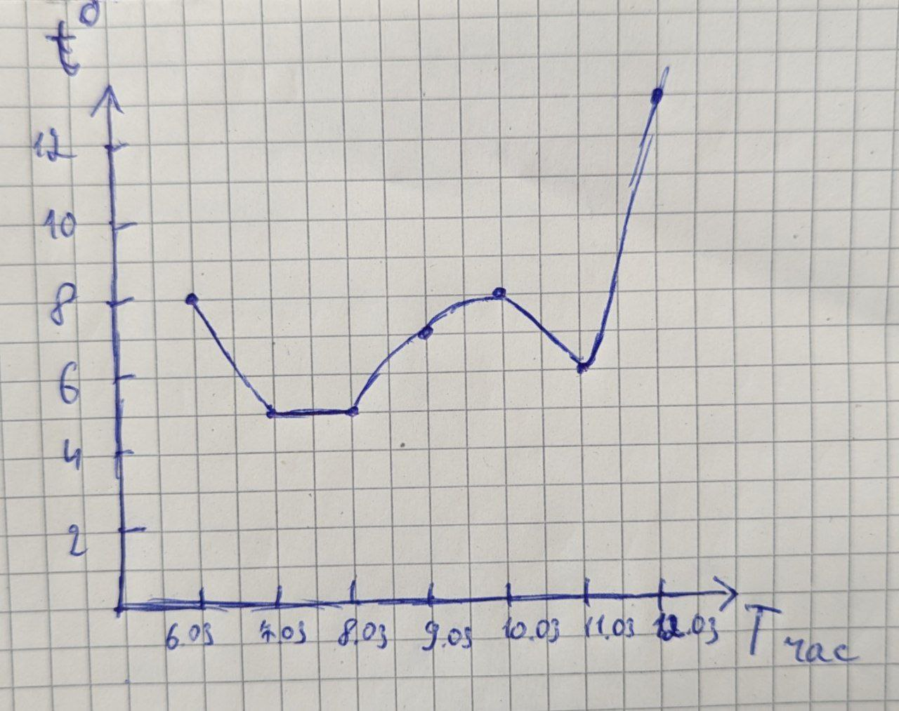
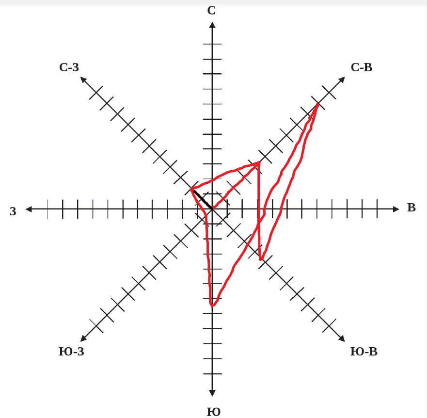

Практична робота №1
№1
Схематичний план метеорологічних майданчиків для станцій з великим і невеликим об’ємом робіт.


Схематичний план метеорологічних майданчиків для станцій з великим і невеликим об’ємом робіт.
| Роки | Метеопости | Станції | Обсерваторії |
| 1915 | 605 | 163 | 4 |
| 1925 | 227 | 153 | 4 |
| 1926 | 500 | 185 | 3 |
| 1929 | 1538 | 360 | 30 |
| 1948 | 323 | 121 | 4 |
| 1994 | 605 | 203 | 23 |
Значення взято з сайту sinoptik.ua вдень(на 14:00)
| Дата | 6.03 | 7.03 | 8.03 | 9.03 | 10.03 | 11.03 | 12.03 |
| Температура, °C | +8° | +5° | +5° | +7° | +8° | +6° | +13° |
| Тиск, мм | 758 | 762 | 761 | 760 | 761 | 758 | 756 |
| Вологість, % | 48 | 60 | 54 | 44 | 65 | 79 | 75 |
| Вітер, м/сек | Штиль | Північно-східний, 4.4 | Північно-західний, 2.0 | Південно-західний, 0.6 | Південний, 6.5 | Північно-східний, 9.9 | Південно-східний, 4.6 |
| Ймовірність опадів, % | - | 2 | 2 | 2 | 8 | 15 | 25 |
Графік розподілу температур (за тиждень) за результатами своїх спостережень
Роза вітрів, використовуючи кліматичний кадастр
1. Найбільш інформативними є домашні метеостанції, які можуть точно вимірювати температуру і вологість повітря в приміщенні та за вікном (як правило, у продажу є тільки цифрові метеостанції). Також вони можуть проводити вимірювання атмосферного тиску та досліджувати динаміку зміни атмосферного тиску.
2. Метеостанцій в Одеській області налічується дванадцять - 8 наземних і 4 морських.
3. Географічна синоптична карта являє собою карту, на якій цифрами та символами позначено результати спостережень за погодою, що проводяться на різних метеорологічних станціях у певні часові проміжки.
4. метеорологічні прилади це спеціальні пристрої, які використовують для вимірювання або реєстрації значень метеорологічних елементів.
5. Метеомайданчик має бути в гарному стані, а також очищений від сміття. На обладнанні та приладах не повинно бути бруду, пилу, павутини або інших забруднень. На метеомайданчику, де трава сильно розростається, необхідно проводити скошування або стрижку трави. Не допускається перевищення висоти рослинності над 20 см.
6. Для розміщення метеорологічних приладів кожна зі станцій (М-49, М-49М, М-49М (км), М-49M (з виходом на ПК), М49М) має майданчик і приміщення для персоналу, розташоване не далі ніж 300 м від майданчика.
7.